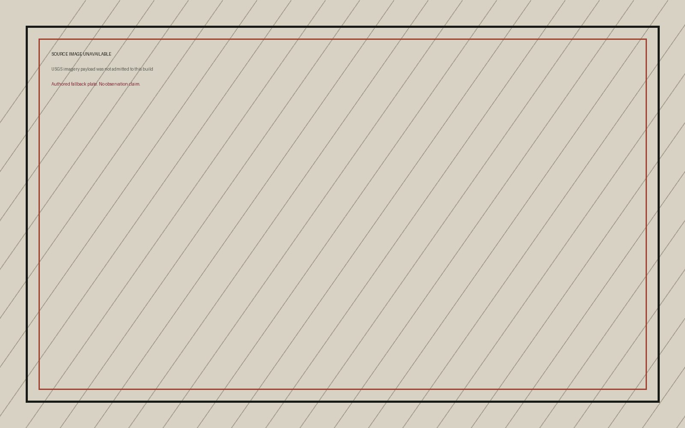

One place · seven scales · eight instruments · five seats
From household care to regional stewardship
Loading the governed place and its source-bound operating record.
Registered place stage
Loading registered view

Evidence condition
Degraded and unavailable evidence
Cross-instrument law
Conflicts retained, never averaged
Governed place and data plane
Place
The public-safe place is the stable identity. Source coverage, scene availability, registration, and operating claims can change without silently changing the place.
Place identity
Street Glide decision
Natural-border registration
Donor identities
Seven genuine apertures
Scale changes the governed object
Each aperture changes evidence, geometry, actor, safe action, authority, acceptance, and handoff while preserving one source run.
Eight registered overlays
Each instrument carries its own source and consequence law
Unavailable, degraded, map-only, and authored states remain distinct. No instrument can manufacture a safe or adverse finding from missing evidence.
Five functional seats
Changing seats changes the governed work
Evidence, controls, authority, acceptance, export, failure, and handoff differ by seat without duplicating the place record.
Directed handoff graph
Questions move; authority does not
Essential Attention handoff
FAB offer preparation remains internal
The planner can prepare a source-linked assistance question. The affected resident retains correction, refusal, narrowing, deferral, and appeal before any external effect exists.
Source custody
Coverage, time, rights, health, and claim scope
A successful response is not the only legitimate state. Empty coverage and missing credentials remain inspectable evidence about the system.
Operating guide
Identify the actor, evidence, authority, and next safe action
This guide explains the object without hiding the current state or turning internal controls into implied permission.